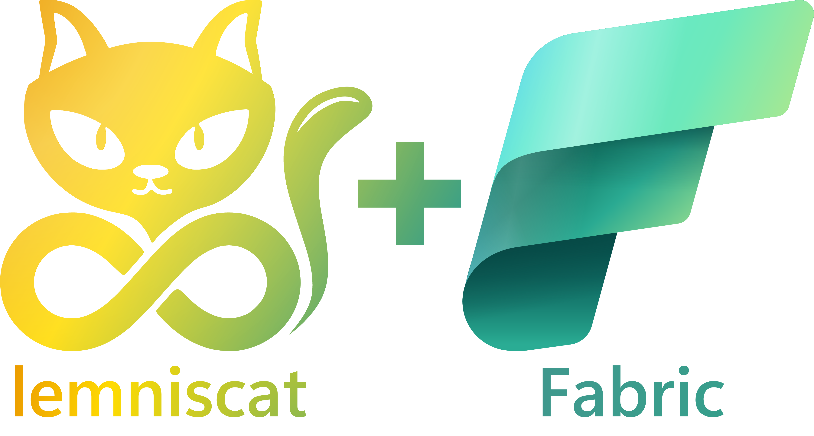

Permettre l'adoption de Fabric grâce à Lemniscat (Partie 1)

Dans ma société, je m'occupe, entre autres, de mettre à disposition de mes collègues des espaces Azure (des groupes de ressources) dans lesquels ils peuvent découvrir les différents services Azure, tester des configurations Azure, etc. Récemment, avec la sortie de Microsoft Fabric, j'ai constaté que j'avais de plus en plus de demandes pour mettre à disposition des espaces Azure avec Microsoft Fabric.
Le problème, c'est que dans ma société, nous avons un tenant dédié pour toutes ces expérimentations. Mes collègues sont donc invités sur ce tenant pour pouvoir accéder aux ressources Azure. Et pour le moment, Microsoft Fabric ne permet pas aux utilisateurs invités d'utiliser le service.
Je devais donc systématiquement leur créer un compte spécifique sur le tenant pour leur permettre de tester Microsoft Fabric. Cela me prenait du temps et je ne trouvais pas cela très pratique.
En parallèle, j'ai initié un nouveau framework open source nommé Lemniscat. Ce framework permet de créer et de maintenir des produits orientés DevOps. Pour faire simple, ce framework est une sorte de "Terraform de Terraform" qui permet de construire des produits qui prennent en compte les différents aspects d'une démarche DevOps, orientée d'un point de vue consommateur du service.
Revenons à notre cas de Microsoft Fabric. Ce service est super intéressant car il offre une expérience unifiée des métiers autour de la data, de l'ingestion à la restitution en passant par la transformation, le machine learning, etc. C'est un service qui permet de faire de la data engineering, de la data science, du BI, etc. Bref, c'est un service qui peut intéresser beaucoup de monde.
Mais en tant qu'utilisateur de ce service, j'ai besoin de quoi, finalement ?
- D'une capacité Fabric que je peux instancier sur Azure.
- D'un accès à cette capacité pour pouvoir l'utiliser.
- D'un environnement de travail pour pouvoir utiliser cette capacité (le Workspace Fabric).
- D'un dépôt git pour pouvoir stocker mes artefacts de travail (mes notebooks, par exemple).
Bref, pour offrir une expérience digne de ce nom à mes collègues, je dois leur mettre à disposition tout cela. Et c'est là que Lemniscat intervient.
Dans cet article, je vais vous montrer comment j'ai pu mettre en place une capacité Fabric sur Azure et donner les droits sur cette capacité à mes collègues en utilisant Lemniscat.
Note
Dans cet article, je ne vais pas entrer dans les détails de Lemniscat. Si vous souhaitez en savoir plus sur Lemniscat, je vous invite à consulter la documentation.
Utilisons terraform pour déployer une capacité Fabric
Parce que c'est simple et que c'est un outil que tout le monde connaît, j'ai décidé d'utiliser Terraform pour déployer une capacité Fabric sur Azure. Cependant, rapidement, je suis confronté à un problème : il n'existe pas encore de module Terraform pour déployer une capacité Fabric sur Azure. Heureusement, j'ai trouvé un exemple de terraform qui permet de le faire. Ce n'est pas idéal, car il est basé sur azapi, mais cela fera l'affaire pour le moment.
Dans cet exemple, je constate qu'il est prévu uniquement pour autoriser un seul administrateur par capacité Fabric. Or, désormais, il est possible de définir plusieurs administrateurs par capacité. Ce n'est pas grave, nous allons effectuer une petite modification pour permettre à plusieurs de mes collègues d'utiliser la même capacité Fabric.
main.tf
resource "azapi_resource" "fab_capacity" {
type = "Microsoft.Fabric/capacities@2022-07-01-preview"
name = var.basename
parent_id = var.resource_group_id
location = var.location
schema_validation_enabled = false
body = jsonencode({
properties = {
administration = {
members = var.admins_email
}
}
sku = {
name = var.sku,
tier = "Fabric"
}
})
tags = var.tags
}
variables.tf
variable "location" {
type = string
description = "Location of the resource group."
}
variable "tags" {
type = map(string)
default = {}
description = "A mapping of tags which should be assigned to the deployed resource."
}
variable "sku" {
type = string
default = "F2"
description = "SKU name"
}
variable "admins_email" {
type = list(string)
description = "Fabric administrators email"
}
Ajoutons la création de nos comptes utilisateurs
Maintenant que nous avons notre capacité Fabric, il nous faut créer les comptes utilisateurs qui pourront l'utiliser.
Note
Pour le moment, Microsoft Fabric ne permet pas l'utilisation d'utilisateurs invités. Ainsi, les utilisateurs doivent être dans le tenant Azure pour pouvoir y accéder.
Il faut donc que je crée des comptes à la volée pour mes collègues. Encore une fois, je vais utiliser Terraform pour cela.
De plus, il est nécessaire que je génère un mot de passe temporaire pour chaque utilisateur. Pour ce faire, je vais utiliser un module Terraform qui me permettra de générer un mot de passe aléatoire.
resource "random_password" "password" {
length = var.length
special = var.special
override_special = var.overrideSpecial
}
Une fois que j'ai généré le mot de passe, je vais créer un compte utilisateur pour chacun des utilisateurs.
resource "azuread_user" "account" {
for_each = { for u in var.users : u.login => u }
user_principal_name = "${each.key}.${var.FABRICNAME}@${var.domainName}"
display_name = each.value.name
mail_nickname = each.key
force_password_change = true
password = module.adminPassword[each.key].password
lifecycle {
ignore_changes = [usage_location]
}
}
Lorsque l'on crée un compte utilisateur, il est nécessaire que l'utilisateur change son mot de passe à la première connexion. C'est pourquoi j'ai ajouté force_password_change = true.
Warning
Dès que notre utilisateur va se connecte à Fabric, l'attribut usage_location sera mis à jour. C'est pourquoi j'ai ajouté ignore_changes = [usage_location] dans le bloc lifecycle. En effet, cet attribut ne peut pas être remis à null (voir : https://registry.terraform.io/providers/hashicorp/azuread/latest/docs/resources/user#usage_location).
Donc, maintenant nous avons notre capacité Fabric et nos utilisateurs.
Cependant, si nous voulons offrir une expérience optimale à nos collègues, il nous faut également créer un environnement de travail pour eux (le Workspace Fabric) et un référentiel Git pour stocker leur travail.
Malheureusement, il n'existe pas de module Terraform et azapi ne pourra pas nous venir en aide. Nous devons trouver une autre solution.
C'est une constatation que j'ai faite à maintes reprises. Il y a des choses que l'on peut réaliser avec Terraform et d'autres non. C'est là que Lemniscat entre en jeu.
Lemniscat pour ochestrer tout cela
Lemniscat est un framework qui permet de créer et de maintenir des produits orientés DevOps. Il permet de concevoir des produits qui prennent en compte les différents aspects d'une démarche DevOps, orientée du point de vue du consommateur du service.
Lemniscat fonctionne à partir d'un manifeste qui décrit le produit. Ce manifeste décrit comment le produit doit être instancié, mais aussi comment il doit être détruit. Ce dernier point est particulièrement pratique dans mon cas. En effet, je souhaite permettre à mes collègues de découvrir Microsoft Fabric, mais je ne veux pas qu'ils laissent leur capacité indéfiniment active. Nous disposons tout de même d'un budget limité et il est important que le plus grand nombre de mes collègues puissent profiter d'Azure. Avec Lemniscat, je peux définir la procédure de destruction du produit.
Initialisation du manfest Lemniscat
Nous allons nous concentrer dans cet article sur la création de la capacité Fabric et des utilisateurs. Nous aborderons dans un prochain article la création du Workspace Fabric et du dépôt Git. Dans le framework Lemniscat, cela correspond à la capacité operate.
Voici le manifeste Lemniscat pour la capacité Fabric et les utilisateurs :
capabilities:
code: null
build: null
test: null
release: null
deploy: null
operate:
solutions:
- solution: Azure
tasks:
<ici nous crérons les opérations permettant de créer les compte utilisateurs et la capacité Fabric>
requirements:
- name: lemniscat.plugin.terraform
version: 0.2.5
- name: lemniscat.plugin.filetransform
version: 0.2.1
Configuration du fichier Tfvars
J'utilise Backstage pour offrir une expérience optimale. J'ai donc créé un formulaire qui permet de demander une capacité Fabric. Je demande à mes collègues quelques informations :
- Le nom de la capacité Fabric :
appName - La puissance de la capacité Fabric :
skuName - La liste des utilisateurs à créer et qui seront Administrateurs de la capacité Fabric :
users - La durée de vie de la capacité Fabric :
delayBeforeCleanUp
Ces paramètres vont être renseignés dans un fichier tfvars que j'utiliserai ensuite avec Terraform.
Pour cela, je vais utiliser la tâche filetransform de Lemniscat pour compléter le fichier tfvars.
- task: filetransform
displayName: 'Set tfvars'
steps:
- pre
- pre-clean
parameters:
folderPath: ${{ product.tfVarsPath }}
fileType: json
targetFiles: "*.tfvars.json"
Une fois cette tâche exécutée, j'ai mon fichier tfvars prêt à être utilisé par Terraform. Par exemple :
{
"appName": "myFabric",
"skuName": "F2",
"users": [
{
"name": "John Doe",
"login": "john.doe",
},
{
"name": "Jane Doe",
"login": "jane.doe",
}
],
"delayBeforeCleanUp": "1h"
}
Création de la capacité Fabric et des utilisateurs
Pour créer la capacité Fabric et les utilisateurs, je vais utiliser le plugin terraform de Lemniscat.
Pour initialiser Terraform, je vais utiliser l'action init.
- task: terraform
displayName: 'Terraform init'
steps:
- pre
- run
- pre-clean
- run-clean
parameters:
action: init
tfPath: ${{ product.tfPath }}
backend:
backend_type: azurerm
storage_account_name: ${{ nc.workspace.stName }}
container_name: tfstates
key: ${{ productInstanceName }}.${{ rgTags.product_name }}.tfstate
Ensuite, je vais utiliser l'action plan pour vérifier que tout est correct, et notamment vérifier que les paramètres d'entrée sont corrects.
- task: terraform
displayName: 'Terraform plan'
steps:
- pre
parameters:
action: plan
tfPath: ${{ product.tfPath }}
tfVarFile: ${{ product.tfVarsPath }}/${{ product.tfVarsFile }}
tfplanFile: ${{ product.tfPath }}/terrafom.tfplan
Enfin, je vais utiliser l'action apply pour déployer la capacité Fabric et les utilisateurs.
- task: terraform
displayName: 'Terraform apply'
steps:
- run
parameters:
action: apply
tfPath: ${{ product.tfPath }}
tfplanFile: ${{ product.tfPath }}/terrafom.tfplan
Destruction de la capacité Fabric et des utilisateurs
Une fois que la capacité Fabric et les utilisateurs ont été créés, il faut penser à les détruire (je rappelle que mes collègues ont besoin temporairement de cette capacité Fabric).
Pour cela, je vais utiliser l'action destroy du plugin terraform.
- task: terraform
displayName: 'Terraform destroy'
steps:
- run-clean
parameters:
action: destroy
tfPath: ${{ product.tfPath }}
tfVarFile: ${{ product.tfVarsPath }}/${{ product.tfVarsFile }}
Conclusion
Forcément, vous allez me dire que je me complique la vie. J'aurais tout simplement pu utiliser Terraform pour tout faire. Et vous avez raison.
Mais comme je l'indiquais au début de cet article, j'ai aussi besoin de créer un environnement de travail (le Workspace Fabric) et un dépôt Git.
Dans le prochain article, je vous montrerai comment avec Lemniscat j'ai pu créer un environnement de travail et un dépôt Git pour permettre à mes collègues conserver leur travail.
À suivre...
Références
- Sample terraform pour Microsoft Fabric
- Documentation terraform : azuread_user, limitation usage_location
- Documentation du framework Lemniscat
Rédigé par Philippe MORISSEAU, Publié le 30 Mars 2024.